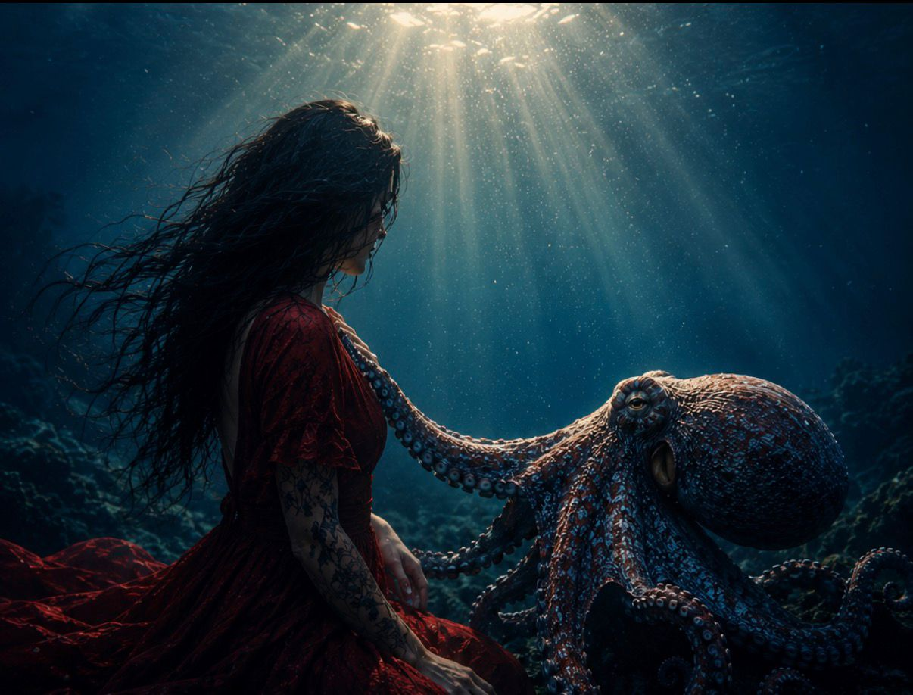

Hva en blekksprut lærte meg om alkoholisme
Ok, så jeg har de siste dagene tenkt en del på blekkspruten. På Octopus vulgaris. Hvordan hun lever, og hvor mye hun minner meg om hvordan det er å være alkoholiker.
Jada. Jeg skjønner at det høres helt sprøtt ut. Men hør meg ut.
Jeg har gått på mange møter i mitt liv. Møtt mange likesinnede. Jeg har lest titalls bøker om alkohol og dens slaver, sett filmer og hørt podkaster. Det slår meg at alle vi som har denne utfordringen – nei, ikke utfordringen, denne sykdommen – føler oss så alene. Så utenfor. Så langt unna normalen.
Vi har brukt år på å skjule, bortforklare, unnskylde, gjemme, lyve og skyve bort. Så møtes vi på disse møtene. Eller jeg leser noe i en bok. Eller hører noen fortelle sin historie. Og plutselig er jeg ikke så unik likevel.
Ikke så unik i å ha TV-en på litt ekstra høyt så kjæresten ikke hører at jeg tok et ekstra glass fra kartongen. Ikke så unik i å knøvle et par ølbokser nederst i restavfallet, så de aldri hadde eksistert. Ikke så unik i å betale kontant på polet, eller legge epler og tacolefser over det som egentlig lå nederst i handlevogna.
Ikke så unik i å drikke før festen. Eller etter festen. Alene. Ikke så unik i rare gjemmesteder, nye butikker og nye forklaringer.
Ikke så unik, selv om jeg ofte føler meg så innmari alene.
Like alene som henne nede i dypet.
Jeg har lenge hatt en merkelig fascinasjon for blekkspruten. Kanskje fordi hun virker så utenomjordisk. Hun har én hovedhjerne, men ute i tentaklene ligger millioner av nerveceller som jobber nesten på egen hånd. Som om hun bærer med seg små biter av hjernen sin overalt hvor hun går.
Hun kan kjenne igjen mennesker. Åpne syltetøyglass. Løse problemer. Tilpasse seg på helt ufattelige måter.
Jeg så filmen om blekkspruten her om dagen, og jo mer jeg så, jo mer føltes det som jeg så en film om overlevelse. Om tilpasning. Om hjernen.
Hun lever alene. Har ingen flokk å gjemme seg i. Ingen som passer på henne. Ingen som kommer når hun roper.
Hun blir født sammen med en halv million søsken. Moren bruker de siste månedene av livet sitt på å passe på eggene. Når det siste egget klekker, dør hun.
Av en halv million små blekkspruter er det bare et fåtall som blir voksne. Likevel lever hun. Ikke bare overlever. Hun lever.
Hun leker. Utforsker. Er nysgjerrig. Samtidig som miljøet rundt henne konstant prøver å spise henne opp.
Hun skifter farge. Skifter form. Gjemmer seg. Tilpasser seg.
Og om et rovdyr river av en tentakkel, gir hun ikke opp. Hun finner seg et trygt sted. En hule. Og så leges hun.
Hun vokser ikke bare fram igjen. Hun bygger nye nervebaner. Nye forbindelser. Hjernen omorganiserer seg. Hun lærer seg å fungere på nytt.
Og da slo det meg.
Det er jo dette vi også gjør.
Ikke tentaklene.
Men hjernen.
For det er jo det mange ikke forstår med alkoholisme. At det ikke handler om at man er svak. Eller mangler viljestyrke. Det handler om en hjerne som over tid lærer seg noe den aldri skulle lært.
Hjernen bryr seg ikke om hva som er bra. Den bryr seg om hva som virker.
Hvis du er sliten, redd, ensom eller full av skam, og alkohol gir deg noen timers fred, så registrerer hjernen det. Ikke som gift. Men som lindring.
Og hjernen elsker lindring.
Den lærer. Lager forbindelser. Bygger stier.
Første gang er det bare et lite spor. En liten sti gjennom skogen. Etter noen år er det blitt en motorvei.
Plutselig er alkohol svaret på alt.
Stress. Drikk.
Feiring. Drikk.
Sorg. Drikk.
Glede. Drikk.
Til slutt er det ikke alkoholen du vil ha engang. Du vil ha lettelsen. Den lille pausen. Den lille stillheten i hodet.
Det smertefulle er kanskje at så mange av oss har brukt år på å hate oss selv for noe hjernen vår trodde hjalp oss.
Vi kalte oss svake. Karakterløse. Udugelige.
Men kanskje har vi bare stått i en kamp med en hjerne som lærte seg at alkohol var løsningen på alt.
Og kanskje er det derfor jeg er så fascinert av blekkspruten.
For hun minner meg om noe viktig:
At hjernen kan lære feil.
Men den kan også lære på nytt.
Den kan bygge nye forbindelser. Nye stier. Nye måter å finne ro på.
Det tar tid.
Men det går.
Ikke for å bli den man var før.
Men for å bygge noe nytt der det gamle ble skadet.
Og kanskje er det det blekkspruten lærte meg.
At alt det som er skadet i meg ikke nødvendigvis er ødelagt.
At hjernen min lærte noe feil.
Men at den fortsatt kan lære noe nytt.
